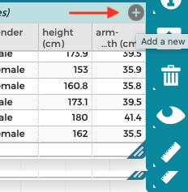
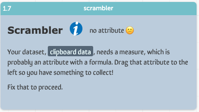
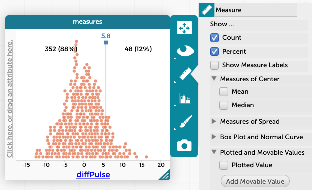

The pulse data: step by step
Now we’ll work with the data you saw in the journal, but instead of glossing over the details of how to do this iin CODAP, we’ll use the experience you got with height data as an orientation and work through the example starting from scratch.
In the live example below, we haven’t even made a CODAP table. Instead, we’re starting with comma-separated text, like you would find in a csv file. Let’s learn how to get that data into CODAP.
- Select the text in the box and copy it.
- Click on the
Tablesicon in the toolbar. A menu appears. Choose-- new from clipboard --
Hooray! You have a CODAP table! It should have 48 cases.
Let’s make the first graph from the article:
- Click
Graphin the toolbar. A graph appears with random points. - From the table, drag
roleto the horizontal axis andpulseto the vertical. - Now, in the graph, click the ruler icon and choose mean (it’s unser
Measures of Center) - Hover over the blue lines to see the values of the mean. Estimate the difference between the teachers and the students.
So far, we’re just exploring, and we’ve discovered an effect that we’re interested in: that teacher pulses seem to be systematically different from student pulses. You can make any number of interesting graphs using these data, but we will stick with the effect of role on pulse.
The next step in our process is to define a measure. This is a single number that describes the effect. In our case, that difference in mean pulse is perfect, so instead of just estimating it, we’ll calculate it.

- Click on the table and find the gray circle with the plus sign.
- Click that to make a new attribute (column). Name it
diffPulse. - Click on that new heading (
diffPulse) to get its menu. ChooseEdit Formula.... The formula box appears. - Enter this formula. It’s long, but you can use copy and paste to make it easier to enter.

- Click
Apply.
Make sure you understand what we’re calculating with the formula. You should see a whole column filled with 5.8.
Using the scrambler
We’ll start this phase of the lesson with a fresh live example document (below), so if you had any trouble before, you can start here and be caught up!
Now we want to do the scrambling.
- Choose
scramblerfrom thePluginsmenu. You should see an error message like the one below:

It says we need a measure. But we just made one: diffPulse!
The problem is, the scrambler doesn’t know that diffPulse is the measure. We need to “promote” it in the hierarchy by moving it left in the table.
- Drag
diffPulseall the way to the left in the table and drop it in the blank white area you see there. It will turn yellow when it’s close.

The table will look like the one in the illustration, and the error message will change as shown.
The plugin wants to know what to scramble. Drag
roleover the scrambler and drop it there. Now the scrambler says,OK to scramble, which is what we want.Press the
1xbutton to perform the scrambling once. A new table appears with the results of that scramble. It’s calledmeasures_from_clipboard data.
That table shows only the measure—the scrambled diffPulse—not the individual, scrambled cases.
To see those, press the
show scrambledbutton. Another table appears (scrambled_clipboard data), just like the original table except withrolescrambled. Look at that table to verify this.Make a new graph, just like the one you already have, except of the scrambled data. Be sure it makes sense to you.
At this point, you are running out of screen space! You can collapse objects by clicking on the big minus signs, upper right, next to the X’s that close the objects.
Change the number in the scrambler box to 39. Watch the graph as you press
39x. See the points and means jump around. Observe: how much do they vary?Make yet another new graph, and put
diffPulsefrom the measures collection on the horizontal axis.Keep adding cases until you get to 400.
Ordinarily, you would put away the scrambled table and graph to save time during the scrambling.
The sampling distribution
You should see a big bell-shaped pile of points in your measures graph (like in the fresh live example below). These are the values of diffPulse that naturally arise just from the randomness in the scrambling process—a process in which the teachers and students have the same distribution of pulses, that is, there is no association between role and pulse.
Our true value, the test statitsic, however, is 5.8. Where is that in the graph?
- Click on the
measuresgraph to select it. - Then, in the ruler palette, look under
Plotted and Movable Values. ClickAdd Movable Value. - Move the value to 5.8, or as close as you can get.
- Again in the ruler palette, check
CountandPercent. It will look something like the illustration.

The graph shows that 12% of the time, even if there were no systematic relationship, you’d still get a value of 5.8 or greater. Qualitatively, we see that a value of 5.8 just isn’t very special. Now, if we had a real difference of 15 bpm, we’d be ready to say, “if there were no relationship, then this value would be really unusual; so we’re confident that what we’re seeing is not just due to chance.”
In traditional statistical terms, that 12% is the p-value: 0.12. This is larger (i.e., less special, less significant) that the traditional (and these days suspect) value of 0.05.